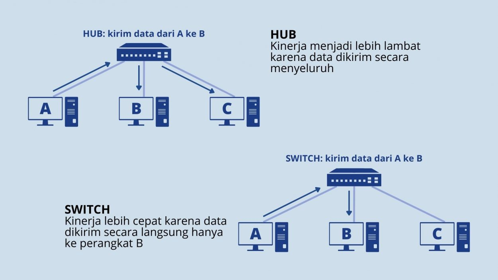

Penjelasan Tentang Materi

perangkat akhir: switch
apa itu switch?
Secara umum, switch adalah komponen jaringan yang berfungsi untuk menghubungkan beberapa perangkat komputer dalam sebuah jaringan. Proses ini memungkinkan pengguna bertukar data dan informasi ke perangkat yang dituju. Pertukaran informasi dilakukan secara terarah sehingga data dapat langsung diterima tanpa adanya gangguan seperti collision.
Fungsi Switch
Secara garis besar, switch berperan sebagai concentrator yang berfungsi untuk mengirim serta menerima data dari dan ke perangkat lain.
- Menyaring dan meneruskan paket data
Fungsi switch pertama yaitu menyaring dan meneruskan paket data yang diterima ke alamat tujuan. Alamat yang dimaksud berupa port dan MAC address perangkat.
- Mencatat alamat
Switch memiliki kemampuan address learning dimana seluruh MAC address yang pernah terhubung akan disimpan dan dipelajari. Ketika menerima data, MAC address pengirim dicatat secara otomatis kemudian switch mempelajari semua proses pengiriman, termasuk kemana arah mana data tersebut harus dikirim.
- Looping avoidance
Fungsi switch lainnya adalah mencegah terjadinya looping data. Kendala ini merupakan kondisi dimana data yang diterima stuck atau hanya berputar-putar di bagian port
Jenis-jenis Switch
Switch memiliki beberapa jenis dengan fungsi dan kelebihan masing-masing, diantaranya sebagai berikut:
- Managed switch
Managed switch memiliki kelebihan yang tidak bisa kamu temui di switch jenis lainnya, yaitu user interface. Tampilan antarmuka pengguna akan mempermudah user ketika melakukan konfigurasi
- Unmanaged switch
Unmanaged switch merupakan jenis switch yang biasanya digunakan di rumah dan kantor berskala kecil menengah. Switch satu ini tidak memerlukan settingan rumit serta proses instalasinya terbilang cukup mudah.
- Enterprise managed switch
Enterprise managed merupakan jenis switch yang sering dipakai oleh perusahaan berskala besar. Konsep topologi switch ini sangat kompleks sehingga diperlukan usaha keras untuk monitoring dan konfigurasinya
- Smart switch
Smart switch bisa dikatakan sebagai jenis yang telah dimodifikasi dengan karakteristik berada di tengah managed dan unmanaged switch. Konfigurasi dan pengaturan smart switch dapat dilakukan dengan memanfaatkan teknologi berbasis web
Download PDF